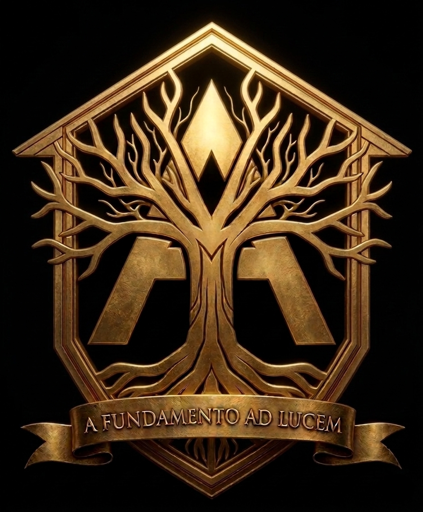

Проект Архитектора Антикризиса Кодекс Архитектора
Этот список должен быть прошит в подсознании. Если ты сомневаешься — читай Кодекс. Если ты проиграл ситуацию — ищи, какой пункт ты нарушил.

Этот список должен быть прошит в подсознании. Если ты сомневаешься — читай Кодекс. Если ты проиграл ситуацию — ищи, какой пункт ты нарушил.
Никогда не начинай движение, если ты не в «Вертикали». Сначала Резонанс — потом шаг. Сначала Сила — потом слово. Пустое действие рождает хаос.
Если вокруг тебя бардак, агрессия или нытье — это значит, твоя внутренняя настройка сбита. Не вини зеркало, исправь проектор.
Лишнее слово — это шум. Лишний жест — это слабость. Лишняя мысль — это вирус. Отсекай всё, что не работает на твой чертеж.
Кто боится тишины, тот ведомый. Кто владеет паузой, тот владеет ситуацией. Тишина — это момент, когда ты перехватываешь управление.
Не ищи легких путей. Радуйся давлению — это твой бесплатный фитнес для харизмы. Без нагрузки металл остается сырым.
Суета — это уродство. Архитектор всегда действует вовремя. Если ты спешишь — ты опоздал внутри себя. Замедлись, чтобы стать быстрее всех.
Твоя подготовка, твои тренировки и твои сомнения остаются за кадром. Мир видит только безупречный результат и твое ледяное спокойствие.
Если ты не приносишь свой Порядок, ты поглощаешься чужим Хаосом. Третьего пути нет. Транслируй свой Резонанс везде, где находишься.
Не смотри на то, что тебе показывают. Смотри на структуру, на мотивы, на суть. Смотри на архитектуру ситуации, а не её декорации.
Твоя радость, твоя уверенность и твоя сила не должны зависеть от похвалы или критики окружающих. Ты сам себе Абсолют и сам себе Судья.
Красиво только то, что работает на 100%. Красота без функции — это ложь. Харизма без результата — это дешевый спецэффект.
Связь с высшим смыслом незыблема. Ты — инструмент в руках Абсолюта. Пока ты верен своей миссии, ты неуязвим.
Свежие аналитические материалы транслируются напрямую в нашем Telegram-канале.
Если материалы проекта Domus Architectus помогают тебе держать «Вертикаль» и наводить порядок в жизни, ты можете поддержать автора и вложиться в развитие экосистемы.